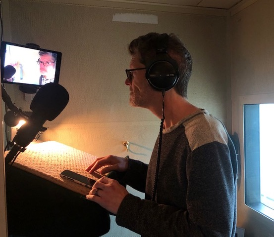

Coronavirus Changes Work Environment
Entertainment seems more crucial than before to keep people relatively sane during coronavirus since people cannot go to the movies or see live shows. Streaming services have helped people get the closest to live theater they could, especially with the release of "Hamilton" on Disney Plus.
However, the actors and crew do not get paid for this experience. Instead, they are living off of minimum wage the Actor’s Equity Association gives them.
Voice actors can still continue their work. They do have to update their home studios, but it is the only entertainment industry where actors are still getting paid for their efforts.
"Not as many actors as you might think are able to do a studio recording from home."
Bob Bergen, the official voice of Porky Pig and several other Looney Tunes characters, has used his home studio to record for auditions before, but he never experienced voice acting studios recording and directing actors from home.
“COVID has made [having a good quality home studio] a necessity,” he said.
Bergen is not the only voice actor who finds himself in a different situation, however. Greg Houser, a narration and commercial voice actor, is in the same boat as Bergen, but Houser finds himself to be more fortunate than most voice actors.
“I’m getting about 20 - 25% more business as of late. Not as many actors as you might think are able to do a studio recording from home so several studios have been using me more than they might have normally. The current situation thanks to the pandemic has also given me an opportunity to reconnect with clients and studios I haven’t worked with in a while, which is part of that increase as well,” he said.
There are some perks to Coronavirus cutting off contact between voice actors and their directors, though. “[Voice acting] is the only acting genre that kept on going with the quarantine. Everyone had to upgrade, like I did. But the only difference is we don’t have to drive in traffic between jobs,” Bergen says.
Voice actors who dub their lines, like Kyle Hebert, have their own different challenges. When dubbing over certain lines, it is essential that the entire team works together to come up with accurate translations, that the voice actors understand the scene and that the dialogue matches the mouth movements the characters make.
For instance, "My Hero Academia” is a popular cartoon show from Japan that is being dubbed in Texas, one of the hotspots for coronavirus. As a result, the show’s whole crew is editing from home.
“Income has gone down considerably since COVID. All the conventions were canceled, so I can't travel and sell autographs. Although, many actors including myself, sign online,” Hebert said of how he tries to gain more income during these trying times.
What Captivity Has Done to Parks and What Can Still Be Done
Internet voice actors have been pumping out content but are aware of the situation going on around the United States. Cody Rock has been voice acting for some time from home and has made no real changes to his home studio equipment.
“I’ve been doing almost all of my [voice over] work from my home studio since well before the pandemic, so it hasn’t changed much, if at all, in that respect. That’s largely because I built a functioning professional home studio early on in my career and have been steadily making improvements as I went along. It wasn’t pretty to start, but I’ve now gotten it to where I can produce broadcast quality media right from my home studio!” he said.
Rock also knows the struggles that professional voice actors face and is impressed with how they are handling the situation.
“All in all, I think pros in the industry are really reacting well to this. The [voice over] industry is a flexible one that can be done from anywhere, and I think that’s something the pandemic has shined a light on,” he said.
Another internet voice actor, Joshua Toback, agrees with this sentiment. He is more focused on getting into the industry and had an internship at a major voice acting studio the past summer.
“Honestly, I think the professional voice actors are adapting wonderfully to this. I've seen many use their own home studios, which is usually a norm in the industry for auditions. However, seeing directors adapt and direct remotely for simuldubs [anime dubs that come out the same day as the original subtitled version of the anime] is really inspiring and can hopefully impact the future of voice over after the pandemic eventually calms down,” Toback said.
Toback would have moved to Los Angeles to kickstart his voice acting career by now, but coronavirus has put those plans on hold, so he is perfecting his voice acting any way he can, whether through fan projects, online voice acting classes or directing voice actors for their auditions.